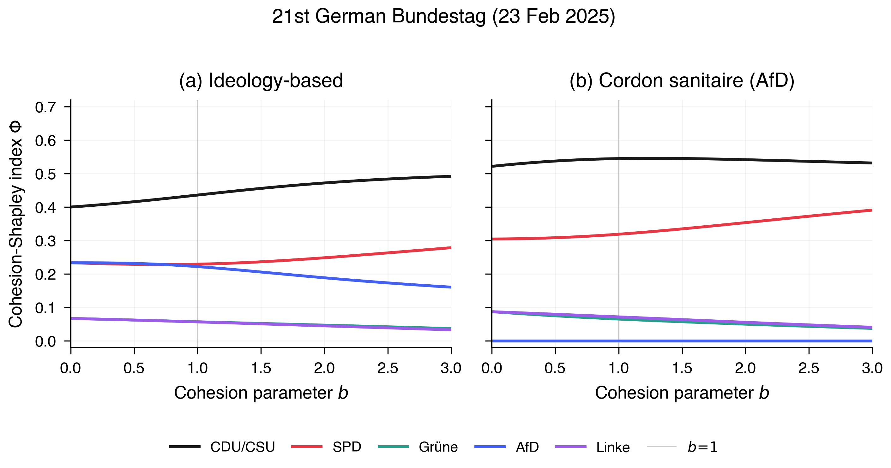

Axiomatic characterizations of cohesion-sensitive power indices are mechanically verified in Lean 4 with Mathlib.
Abstract
In many applications of cooperative game theory -- from corporate governance and cartel formation to parliamentary voting -- not all winning coalitions are feasible. Ideological distances, institutional constraints, or pre-electoral agreements may render certain coalitions implausible. Classical power indices ignore this and weight all winning coalitions equally. We introduce cohesion structures to quantify coalition feasibility and axiomatically characterize two families of cohesion-sensitive power indices, represented as expected marginal contributions under Luce-type distributions. In the Banzhaf branch, coalition weights are a power transformation of cohesion; in the Shapley branch, additional axioms separate size from cohesion, recovering the classical size weights with cohesion acting within each size class. All results have been mechanically verified in Lean 4 with Mathlib. We illustrate the framework on the German Bundestag and the French Assemblée Nationale, where cordon sanitaire and double cordon scenarios produce sharp, interpretable power shifts.
Problem
Classical power indices (Banzhaf, Shapley-Shubik) weight all winning coalitions equally, ignoring the fact that ideological distances or institutional constraints make some coalitions implausible. A principled way to incorporate coalition feasibility into power measurement was lacking.
Approach
The authors introduce cohesion structures that quantify coalition feasibility and axiomatically characterize two families of cohesion-sensitive power indices as expected marginal contributions under Luce-type distributions. In the Banzhaf branch, coalition weights are a power transformation of cohesion; in the Shapley branch, size and cohesion are separated, with cohesion acting within each size class. All axiomatic results are mechanically verified in Lean 4 with Mathlib.
Results
Applied to the German Bundestag and French Assemblee Nationale, cordon sanitaire and double cordon scenarios produce sharp power shifts. Varying the cohesion exponent b interpolates smoothly between the classical index (b=0) and configurations where ideologically isolated parties (e.g., AfD) lose almost all power.

Figure 2: Cohesion-Shapley power indices as a function of the exponent b , 21st German Bundestag (official result, 23 February 2025; CDU/CSU 208, AfD 152, SPD 120, Grüne 85, Linke 64 seats; threshold 316). At b=0 the index reduces to the classical Shapley–Shubik value. The dashed vertical line marks the canonical linear specification b=1 . Left (Scenario A): pure ideology cohesion; SPD gains a sli